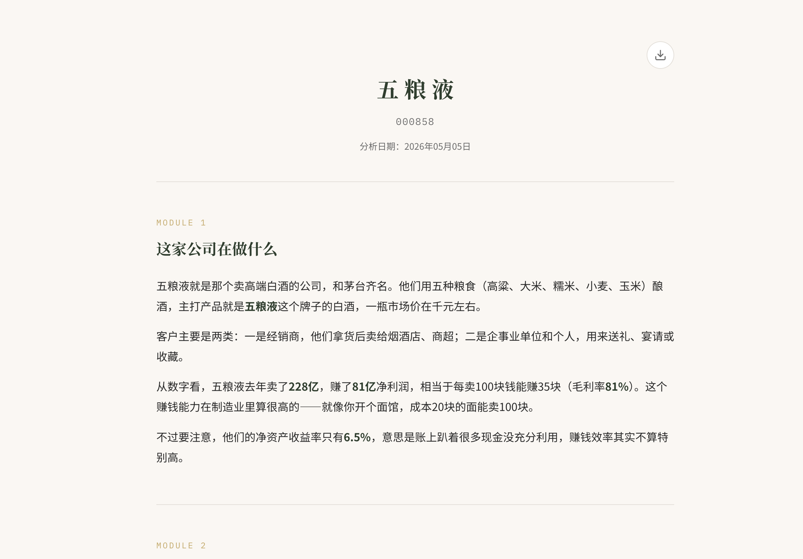
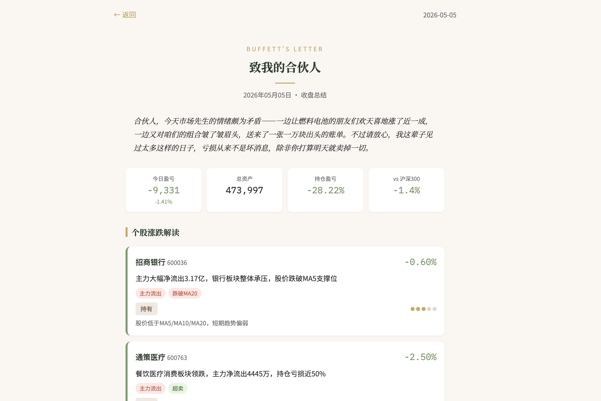
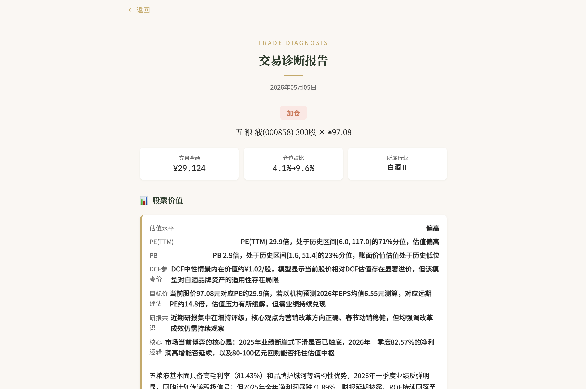

缺乏系统分析框架，看了一堆消息却抓不住重点
没时间持续跟踪持仓，涨了不知道该不该卖，跌了慌
买卖缺乏理性决策依据，事后复盘总是后悔
输入股票代码，一键生成 10 大维度全方位研报。从基本面到技术面，从估值模型到风险提示，帮你建立系统的分析框架。

导入你的持仓，每日收到一封 AI 生成的「巴菲特来信」。用价值投资的视角审视你的持仓，给出理性的分析和建议。

买入还是卖出？先问问 AI。输入你的交易意图，从价值、仓位、时机、市场等 6 个维度给出全面诊断，帮你做出更理性的决策。

git clone https://github.com/firyrice/zhixinglu.git
cd zhixinglu
pip install -r requirements.txtcp .env.example .env
# 编辑 .env，填入你的 LLM API Key
# 支持任何 OpenAI 兼容接口python3 run.py
# 访问 http://localhost:5001环境要求：Python 3.8+，需要 LLM API Key（支持 OpenAI、Claude、Gemini 等兼容接口）